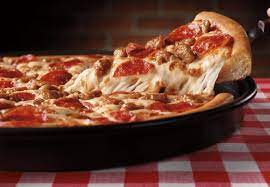

Pizza

Modern pizza evolved from similar flatbread dishes in Naples, Italy, in the 18th or early 19th century. The word pizza was first documented in AD 997 in Gaeta and successively in different parts of Central and Southern Italy. Pizza was mainly eaten in Italy and by emigrants from there.
Ingredients
- pizza dough
- pizza sauce
- pepperoni
- parmesian cheese
Steps
- First, prepare the pizza dough recipe. Move the oven rack to the lowest position and preheat the oven to 500 degrees F.
- Next, sprinkle cornmeal over two 14-inch round pizza pans.
- Then move one dough ball one of the pans and press the dough out into a 14-inch circle. Brush the dough’s outer edge with olive oil.
- Assemble the pizza as per the instructions above.
- Bake for 10-14 minutes, or until the crust has browned and the pizza is cooked through. Let the pizza sit for 5 minutes before slicing and serving.
- Repeat with the remaining dough and toppings.